Project report - Alzheimer’s Disease: New Hope
Mia Yu, Aiying Huang, Kairui Wang, Yige Bian, Eunice Wang
Introduction
In the quiet twilight of memory, where the essence of a person’s life - their joys, sorrows, and triumphs - slowly dims, lies the profound tragedy of Alzheimer’s disease. It’s a realm where the familiar contours of identity are relentlessly eroded, not by the passage of time, but by an insidious ailment that disassembles the core of who they are. Each forgotten name, each lost memory, is a star winking out in the galaxy of a person’s life story, leaving behind a haunting void where once there was a rich tapestry of experiences and connections.
Motivation
Alzheimer’s disease is an irreversible, progressive brain disorder affecting more than 6.5 million Americans that slowly destroys memory and thinking skills and, eventually, the ability to carry out simple tasks. However, existing drugs only treat the symptoms of Alzheimer’s disease. They do not treat the root cause of the disease and do not slow down how quickly it gets worse. To date, there hasn’t been a new drug approved for Alzheimer’s disease in 20 years. 2023 is an important year for AD because a breakthrough occurs in AD treatment: two promising drugs, Leqembi and Donanmab, for treating Alzheimer’s disease bring fresh hope. Leqembi, the first treatment that shows an unequivocal slowing of decline in Alzheimer’s disease, is fully approved by FDA in July 2023. Donanemab is widely expected to be granted full FDA approval within the next year. These two medications are both with impressive Phase III clinical trial results. They represent an important advancement in the ongoing fight to effectively treat Alzheimer’s disease and could be the beginning of the end of Alzheimer’s disease.
Our project is driven by the desire to deeply understand Alzheimer’s disease in its entirety - its distribution, associated factors, and the transformative potential of these new drugs. We aim to explore how these advancements might alter the course of Alzheimer’s.
Initial Questions
From the available data we are interested in answering the following questions:
Regarding Alzheimer Facts and Influencing Factors
How does the distribution and prevalence of Alzheimer’s disease vary across the United States, and what are the key factors influencing these patterns?
How can our data science models predict future trends in mortality rates of Alzheimer’s patients across different states, and how might these predictions inform targeted interventions and resource allocation to mitigate the impact of Alzheimer’s disease?
Regarding Pipeline and Clinical Trials of New Alzheimer Drugs
How can we provide a comprehensive and detailed overview of the current Alzheimer’s drug trials in the U.S., encompassing their stages, approaches, and geographical distribution?
How do Lecanemab and Donanemab, the newly FDA-approved Alzheimer’s drugs, compare in terms of their development, efficacy, and potential impact?
Analysis
Data Sources
Associated Factors Datasets
To study the complex interplay of factors contributing to Alzheimer’s Disease, we have sourced a diverse range of datasets, including age, socioeconomic status, healthcare access, education level, etc. We collected data from authoritative and reliable sources such as government website and professional institude. The final data for analysis is obtained by merging these Alzheimer’s Disease related datasets. The cleaning process include variable selection, converting variable to the type we need, and transforming the dataframe to tidy format. The details of importing and cleaning of all datasets are as following:
The first dataset
death_ratecontains the mortality of Alzheimer’s Disease in each state from 2014 to 2021, which can be accessed from CDC.econdatadataset contains the economic status of each state from 2008 to 2021, including GDP, income, price index, expenditure on healthcare etc. The data is downloaded from Bureau of Economic Analysis.edu_leveldataset contains the percentage of population obtained Bachelor’s Degree or Higher in each state from 2018 to 2021. The data is extracted from Federal Reserve Economic Data.diabetesdataset contains the rate of diabetes by state from 2018 to 2021. The data can be accessed here.smokedataset contains the rate of smoking by state. The sources of the data are CDC and KFF.Cardiovascular Diseasedataset contains the Cardiovascular Disease rate, and the data can be accessed here.age_over_65dataset contains the percentage of elderly people (>65 years old). This data is extracted from Census Bureau and PRB.obesitydataset contains the percent of adults aged 18 years and older who have obesity in each state, and the data can be accessed from CDC.
death_rate =
read_csv("./Data/death_rate.csv") |>
janitor::clean_names() |>
rename(death_rate = rate) |>
select(state, year, death_rate) |>
filter(year >= 2018) |>
arrange(state, year)
econ_data =
read_csv("./Data/econdata.csv") |>
janitor::clean_names() |>
select(geo_name, description, x2018:x2021) |>
mutate(description =
case_match(
description,
"GDP"~"gdp",
"PCE"~"pce",
"Regional price parities"~"rpp",
"employment"~"employment",
"healthcare expenditure"~"hc_exp",
"personal income"~"income",
"population"~"population")) |>
pivot_longer(
x2018:x2021,
names_to = "year",
values_to = "value"
) |>
pivot_wider(
names_from = "description",
values_from = "value"
) |>
rename(state = geo_name) |>
mutate(year = as.numeric(str_replace(year, "x", "")),
gdp = gdp/(population/1000000),
pce = pce/(population/1000000),
employment = round(employment/(population), 4),
hc_exp = hc_exp/(population/1000000),
income = income/(population/1000000),
) |>
select(-population) |>
arrange(state, year)
edu_level =
read_excel("./Data/edu_level.xlsx") |>
janitor::clean_names() |>
select(state, x2018:x2021) |>
pivot_longer(
x2018:x2021,
names_to = "year",
values_to = "edu_level"
) |>
mutate(year = as.numeric(str_replace(year, "x", "")),
edu_level = edu_level/100) |>
arrange(state, year)
diabetes_rate =
read_excel("./Data/diabetes.xlsx", range = "A1:C205") |>
janitor::clean_names() |>
rename(diabetes_rate = diabetes_proportion) |>
mutate(diabetes_rate = round(as.numeric(diabetes_rate), 3),
year = as.numeric(year)) |>
arrange(state, year)
cardio_rate =
read_excel("./Data/Cardiovascular Disease.xlsx", range = "A1:E52") |>
janitor::clean_names() |>
pivot_longer(
x2018:x2021,
names_to = "year",
values_to = "cardio_rate"
) |>
mutate(year = as.numeric(str_replace(year, "x", ""))) |>
arrange(state, year)
smoke_rate =
read_excel("./Data/smoke.xlsx") |>
janitor::clean_names() |>
pivot_longer(
x2018:x2021,
names_to = "year",
values_to = "smoke_rate"
) |>
mutate(year = as.numeric(str_replace(year, "x", "")),
smoke_rate = smoke_rate/100) |>
arrange(state, year)
elderly_rate = read_excel("./Data/age_over_65/age_over_65.xlsx") |>
janitor::clean_names() |>
pivot_longer(
x2018:x2021,
names_to = "year",
values_to = "elder_rate"
) |>
mutate(year = as.numeric(str_replace(year, "x", ""))) |>
arrange(state, year)
obesity_rate = read_csv("./Data/obesity.csv") |>
janitor::clean_names() |>
pivot_longer(
x2018:x2021,
names_to = "year",
values_to = "obesity_rate"
) |>
mutate(year = as.numeric(str_replace(year, "x", ""))) |>
arrange(state, year)geo_data = left_join(death_rate, econ_data, by = c("state", "year")) |>
left_join(edu_level, by = c("state", "year")) |>
left_join(diabetes_rate, by = c("state", "year")) |>
left_join(cardio_rate, by = c("state", "year")) |>
left_join(smoke_rate, by = c("state", "year")) |>
left_join(elderly_rate, by = c("state", "year")) |>
left_join(obesity_rate, by = c("state", "year"))These datasets were tidied and merged as geo_data for
our future study. The final geo_data contains 204 and 15
variables, including state, year, death_rate, gdp, pce, rpp, employment,
hc_exp, income, edu_level, diabetes_rate, cardio_rate, smoke_rate,
elder_rate, obesity_rate
write.csv(geo_data, "./Data/geo_data.csv", row.names = FALSE)Clinical Trials data
Clinicaltrials.gov provided complete and detailed information of all current Alzheimer’s disease drugs. Clinical Trials data is directly downloaded from clinicaltrials.gov.
CT_data =
read_csv("./Data/ClinicalTrials_raw_data.csv") |>
janitor::clean_names() |>
select(-study_title, -acronym, -study_results, -conditions, -brief_summary, -primary_outcome_measures, -secondary_outcome_measures, -other_outcome_measures, -study_design, -other_i_ds, - primary_completion_date, -first_posted, -results_first_posted, -last_update_posted)The raw data is too complicated with redundant information, so we did an initial variable selection to omit useless variables. There are a total of 3026 and 15 variables. Variables and description is listed below:
nct_number: Unique Identification of clinical trialsstudy_url: Website address for more details of the studystudy_status: Study statusinterventions: Intervention methods of studysponsor: Study sponsorcollaborators: Study collaboratorsex: Gender of study participants (include “MALE”, “FEMALE”, “ALL”, “OBSERVATIONAL”, and missing value)age: Age of study participants (include combination of Chiled, Adult, Oler Adult, and missing value)phases: Phases of the studyenrollment: Number of Participants enrolled in the studyfunder_type: Type of sponsorstudy_type: Type of study (“INTERVENTIONAL”, “OBSERVATIONAL”, “EXPANDED_ACCESS”, and missing value)start_date: Start date of studycompletion_date: Completion date of studylocations: Location(s) of study (Locations were divided by “|” for study conducted in more than one location)
Data for further investigation on two latest drugs Lecanemab and Donanemab are from their published Phase III study results. Relevant website could be accessd from Lecanemab and Donanemab. Both study contians data for participants basic information, adverse events statistics, survival analysis and treatment evaluation.
# Safety data for Lecanemab
lec_safety =
readxl::read_excel("data/Lecanemab.xlsx",sheet="safety", range = "A1:C5")
# Adverse Events data for Lecanemab
lec_AE =
readxl::read_excel("data/Lecanemab.xlsx",sheet="AE", range = "A1:C10")
# Treatment evluation data for Lecanemab
lec_result =
readxl::read_excel("data/Lecanemab.xlsx",sheet="safety", range = "A1:H15")
# Safety data for Donanemab
don_safety =
readxl::read_excel("data/Donanemab.xlsx",sheet="safety", range = "A1:C5")
# Adverse Events data for Donanemab
don_AE =
readxl::read_excel("data/Donanemab.xlsx",sheet="AE", range = "A1:C10")
# Hazard ratio analysis data for Donanemab
don_hazard =
readxl::read_excel("data/Donanemab.xlsx",sheet="K-M", range = "A1:D17")
# Treatment evluation data for Donanemab
don_result =
readxl::read_excel("data/Donanemab.xlsx",sheet="safety", range = "A1:H33")Exploratory Analysis
Shiny App
The prevalence and mortality rates of Alzheimer’s Disease, along with other pertinent factors, exhibit significant variation across different states and over various years. To effectively visualize and have a direct overview of these geographical and temporal trends, we have developed a Shiny app. The following screenshot offers a glimpse into the app’s capabilities, and the full dashboard can be accessed [here].
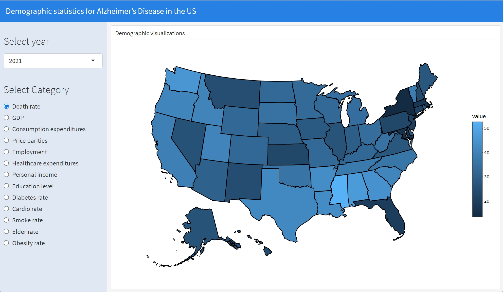
Data Overview
data = read_csv("./Data/geo_data.csv")
# 1. Descriptive statistics table for all variables
skimr::skim(data)| Name | data |
| Number of rows | 204 |
| Number of columns | 15 |
| _______________________ | |
| Column type frequency: | |
| character | 1 |
| numeric | 14 |
| ________________________ | |
| Group variables | None |
Variable type: character
| skim_variable | n_missing | complete_rate | min | max | empty | n_unique | whitespace |
|---|---|---|---|---|---|---|---|
| state | 0 | 1 | 4 | 20 | 0 | 51 | 0 |
Variable type: numeric
| skim_variable | n_missing | complete_rate | mean | sd | p0 | p25 | p50 | p75 | p100 | hist |
|---|---|---|---|---|---|---|---|---|---|---|
| year | 0 | 1.00 | 2019.50 | 1.12 | 2018.00 | 2018.75 | 2019.50 | 2020.25 | 2021.00 | ▇▇▁▇▇ |
| death_rate | 4 | 0.98 | 32.08 | 8.69 | 13.60 | 25.90 | 32.70 | 37.90 | 58.00 | ▃▅▇▃▁ |
| gdp | 0 | 1.00 | 61397.29 | 22766.78 | 36958.76 | 50478.65 | 57614.92 | 65740.82 | 213334.66 | ▇▁▁▁▁ |
| pce | 0 | 1.00 | 40289.62 | 3973.64 | 34085.58 | 37609.41 | 39756.63 | 42098.30 | 61372.54 | ▇▇▂▁▁ |
| rpp | 0 | 1.00 | 97.28 | 7.06 | 85.84 | 91.68 | 95.42 | 102.31 | 113.23 | ▅▇▅▃▃ |
| employment | 0 | 1.00 | 0.62 | 0.11 | 0.47 | 0.58 | 0.61 | 0.65 | 1.30 | ▇▃▁▁▁ |
| hc_exp | 0 | 1.00 | 7625.24 | 1240.92 | 5231.49 | 6689.52 | 7506.68 | 8400.47 | 11755.09 | ▅▇▆▂▁ |
| income | 0 | 1.00 | 52537.53 | 6160.77 | 40646.56 | 48262.55 | 51807.00 | 55718.68 | 75357.47 | ▃▇▃▁▁ |
| edu_level | 0 | 1.00 | 0.33 | 0.07 | 0.21 | 0.29 | 0.32 | 0.37 | 0.64 | ▅▇▂▁▁ |
| diabetes_rate | 2 | 0.99 | 0.12 | 0.02 | 0.07 | 0.10 | 0.11 | 0.13 | 0.17 | ▂▇▆▃▂ |
| cardio_rate | 2 | 0.99 | 0.07 | 0.02 | 0.04 | 0.06 | 0.07 | 0.08 | 0.13 | ▂▇▅▁▁ |
| smoke_rate | 2 | 0.99 | 0.15 | 0.03 | 0.06 | 0.13 | 0.15 | 0.17 | 0.25 | ▂▇▇▃▁ |
| elder_rate | 1 | 1.00 | 0.17 | 0.02 | 0.11 | 0.16 | 0.17 | 0.18 | 0.22 | ▁▁▇▅▂ |
| obesity_rate | 1 | 1.00 | 32.21 | 4.06 | 23.00 | 29.35 | 32.30 | 35.20 | 40.80 | ▂▆▆▇▂ |
The dataset contains 204 rows and 15 columns, covering a wide array of variables categorized into several key areas:
Demographic and Economic Indicators: This includes data on the state,
year, death rate, Gross Domestic Product (gdp), Personal
Consumption Expenditure (pce), Regional Price Parity
(rpp), employment level (employment_rate),
healthcare expenditure (hc_exp), and income.
Public Health Metrics: The data provides detailed insights into various health-related statistics, such as the diabetes rate, cardiovascular disease rate, smoking rate, the proportion of the elderly population, and the obesity rate.
library(plotly)
missing_data <- data |>
summarise_all(funs(sum(is.na(.)))) |>
gather(key = "Variable", value = "MissingValues") |>
mutate(Variable = fct_reorder(Variable, -MissingValues))
plot_ly(missing_data, x = ~Variable, y = ~MissingValues, type = "bar", marker = list(color = "rgba(55, 128, 191, 0.7)", line = list(color = "rgba(55, 128, 191, 0.7)", width = 2))) |>
layout(title = "Missing Data Visualization",
xaxis = list(title = "Variables"),
yaxis = list(title = "Number of Missing Values"))Missing Value Analysis
data = data |>
drop_na(death_rate)From the above, we can see that there are 4 missing values in
death_rate. diabetes_rate,
cardio_rate and smoke_rate each have 2 missing
values. elder_rate and obesity_rate each have
1 missing value. The reason for missing values in
death_rate is that there is no available data for the
District of Columbia. Since death_rate is the predictor
variable of interest, we choose to directly delete all data for this
state. The remaining missing values are relatively few, and we choose to
directly delete rows containing missing values. In summary, because
there are not many missing values and they are not easily imputed, we
simply delete rows containing missing values.
# Explore distribution of results and consider potential transformations
# Create a histogram
plot_ly(data, x = ~death_rate, type = "histogram", nbinsx = 30, marker = list(color = "rgba(55, 128, 191, 0.7)", line = list(color = "rgba(55, 128, 191, 0.7)", width = 2))) %>%
layout(title = "Histogram of Death Rate")Since our goal is to create a model to predict the death rate, we separately examine the distribution of predictor variables. As shown in the above chart, the distribution of death rate is almost symmetric, thus we do not perform any transformations on it for now.
test = data |>
drop_na(death_rate)
mean(test$death_rate) - median(test$death_rate)## [1] -0.6235Multi-colinearity Check
Due to multicollinearity potentially leading to substantial
fluctuations in coefficient estimates and reduced precision of the
estimates, we grouped predictor variables with similar properties or
correlations to examine multicollinearity. We divided gdp,
pce, rpp, employment_rate,
hc_exp, income, and edu_level
into one group representing economic and social factors, and
diabetes_rate, cardio_rate,
smoke_rate, elder_rate, and
obesity_rate into another group representing health and
disease-related factors for analysis. Correlation heatmaps can help us
identify whether there is multicollinearity among the selected predictor
variables.
# Handling missing data, here we choose to delete rows containing missing values.
data <- na.omit(data)library(corrplot)
data_selected_social <- data %>% select(gdp, pce, rpp, employment,hc_exp,income,edu_level)
# Calculate the correlation matrix
correlation_matrix <- cor(data_selected_social)
# Visualize the correlation matrix
corrplot(correlation_matrix, type = "upper", order = "hclust", tl.col = "black", tl.srt = 45)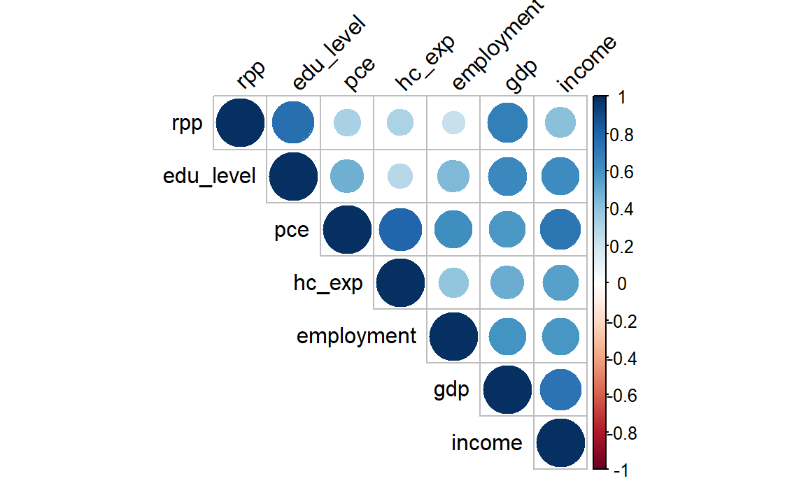
From the heatmap, we observed a high degree of correlation among GDP, personal consumption expenditure (PCE), regional price parity (RPP), employment, healthcare expenditure (HC_EXP), income, and education level. Consequently, we decided to remove GDP, PCE, and RPP from our analysis. Firstly, from a practical standpoint, while GDP, PCE, and RPP do provide some insights into the economic conditions of a region, their direct connection to Alzheimer’s disease death rates may be relatively weak. In contrast, variables like employment status, healthcare expenditure, personal income, and education level are more likely to directly impact the survival rates of Alzheimer’s disease patients. Secondly, removing highly correlated variables helps mitigate the issues related to multicollinearity, enhancing the stability and interpretability of the model.
data_selected_desease <- data %>% select(diabetes_rate,cardio_rate,smoke_rate,elder_rate,obesity_rate)
# Calculate the correlation matrix
correlation_matrix <- cor(data_selected_desease)
# Visualize the correlation matrix
corrplot(correlation_matrix, type = "upper", order = "hclust", tl.col = "black", tl.srt = 45)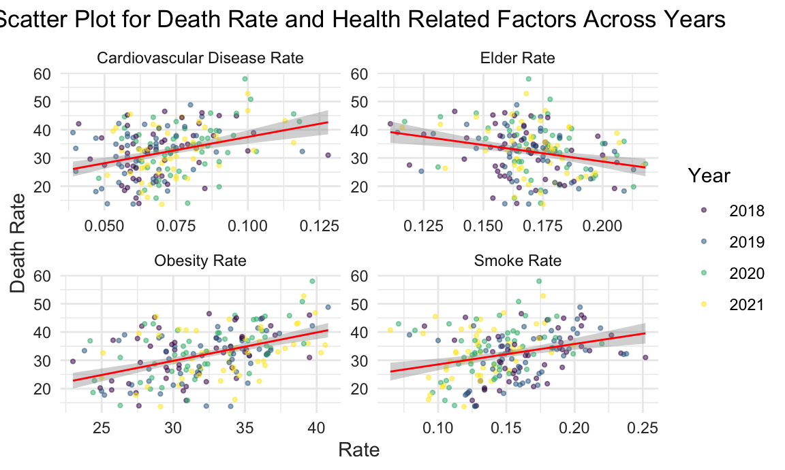
Based on the heatmap, it can be observed that the variables
diabetes_rate and obesity_rate are highly
correlated. Among these variables, we ultimately chose to delete
diabetes_rate while retaining cardio_rate. Some studies
have indicated a certain association between heart disease and
Alzheimer’s disease. Heart disease may affect blood supply to the brain,
which is related to cognitive decline. Therefore, retaining the
cardio_rate as a predictive variable may help capture this
potential association.
Correlation and Scatter Plot:
data |>
select(year, death_rate, smoke_rate, cardio_rate, obesity_rate, elder_rate) |>
pivot_longer(
smoke_rate:elder_rate,
names_to = "category",
values_to = "Rate") |>
mutate(year = as.character(year),
category = case_match(
category,
"smoke_rate" ~ "Smoke Rate",
"cardio_rate" ~ "Cardiovascular Disease Rate",
"obesity_rate" ~ "Obesity Rate",
"elder_rate" ~ "Elder Rate"
)) |>
ggplot(aes(x = Rate, y = death_rate, color = year)) +
geom_point(alpha = 0.5, size = 0.8) +
geom_smooth(method = 'lm', se = TRUE, size = 0.5, color = 'red') +
theme_minimal() +
theme(
plot.title = element_text(hjust = 0.5),
axis.text = element_text(color = "grey20"),
axis.title = element_text(color = "grey20")
) +
labs(
title = "Scatter Plot for Death Rate and Health Related Factors Across Years",
y = "Death Rate",
color = "Year"
) +
facet_wrap(~category, scales = "free", ncol = 2)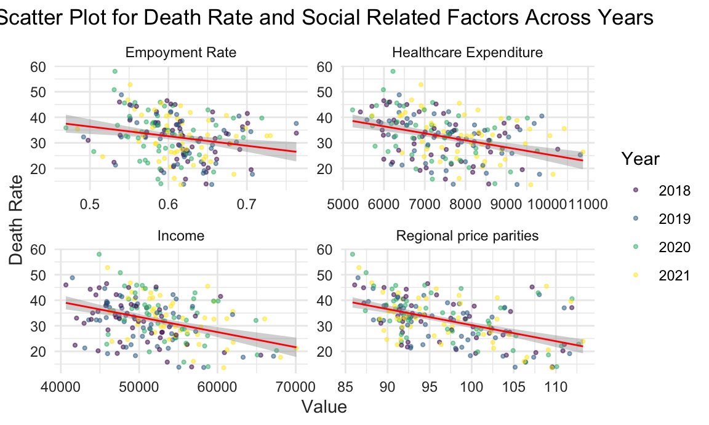
There is a positive correlation between the proportion of smokers and the prevalence of obesity and cardiovascular disease, and the overall mortality rate. Conversely, the percentage of the population aged 65 and older shows a negative correlation with the mortality rate. This suggests that a higher percentage of older adults may reflect a more advanced state of medical care in that region, potentially leading to a lower rate of deaths attributed to Alzheimer’s disease
data |>
select(year, death_rate, income, employment, hc_exp, rpp) |>
pivot_longer(
income:rpp,
names_to = "category",
values_to = "Value") |>
mutate(year = as.character(year),
category = case_match(
category,
"income" ~ "Income",
"employment" ~ "Empoyment Rate",
"hc_exp" ~ "Healthcare Expenditure",
"rpp" ~ "Regional price parities"
)) |>
ggplot(aes(x = Value, y = death_rate, color = year)) +
geom_point(alpha = 0.5, size = 0.8) +
geom_smooth(method = 'lm', se = TRUE, size = 0.5, color = 'red') +
theme_minimal() +
theme(
plot.title = element_text(hjust = 0.5),
axis.text = element_text(color = "grey20"),
axis.title = element_text(color = "grey20")
) +
labs(
title = "Scatter Plot for Death Rate and Social Related Factors Across Years",
y = "Death Rate",
color = "Year"
) +
facet_wrap(~category, scales = "free", ncol = 2)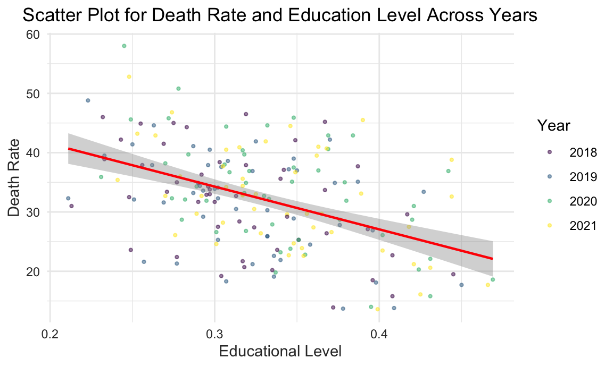
There are negative association between Alzheimer’s disease mortality rates and factors such as income, employment, price index, and healthcare expenditure. Higher income and employment levels, often associated with better access to healthcare, correspond with lower Alzheimer’s death rates. Similarly, regions with a higher price index and greater healthcare spending show fewer deaths from this disease.
However, the data points show a lack of tight clustering, which suggests that a linear model might not fully capture the nuances of these relationships. This pattern hints at the potential for a more complex, non-linear relationship between these socio-economic factors and Alzheimer’s mortality.
data |>
ggplot(aes(x = edu_level, y = death_rate, color = as.factor(year))) +
geom_point(alpha = 0.5, size = 0.8) +
geom_smooth(method = 'lm', se = TRUE, size = 0.8, color = 'red') +
labs(
title = "Scatter Plot for Death Rate and Education Level Across Years",
x = "Educational Level",
y = "Death Rate",
color = "Year"
) +
theme_minimal() +
theme(
plot.title = element_text(hjust = 0.5),
axis.text = element_text(color = "grey20"),
axis.title = element_text(color = "grey20")
)
The graph illustrates a trend where higher levels of educational attainment are associated with lower mortality rates. This pattern suggests that better education may contribute to improved health outcomes, potentially due to increased health awareness, better access to healthcare resources, or healthier lifestyle choices typically associated with higher education levels.
However, it’s important to consider that Alzheimer’s disease predominantly affects older individuals, and there may be a temporal discrepancy between the current education levels and those of the older population primarily impacted by this disease. This time-related difference suggests that while educational attainment appears to be a protective factor, the actual impact on Alzheimer’s mortality might be influenced by historical changes in education over the decades. Therefore, when interpreting these results, we should be cautious about directly correlating current educational standards with Alzheimer’s outcomes in an aging population.
Preliminary Analysis
1. Death rate by Regions
data <- read_csv("data/geo_data.csv") |>
mutate(region = case_when(
state %in% c("Connecticut", "Maine", "Massachusetts", "New Hampshire", "New Jersey", "New York", "Pennsylvania", "Rhode Island", "Vermont") ~ "Northeast",
state %in% c("Illinois", "Indiana", "Iowa", "Kansas", "Michigan", "Minnesota", "Missouri", "Nebraska", "North Dakota", "Ohio", "South Dakota", "Wisconsin") ~ "Midwest",
state %in% c("Alabama", "Arkansas", "Delaware", "District of Columbia", "Florida", "Georgia", "Kentucky", "Louisiana", "Maryland", "Mississippi", "North Carolina", "Oklahoma", "South Carolina", "Tennessee", "Texas", "Virginia", "West Virginia") ~ "South",
state %in% c("Alaska", "Arizona", "California", "Colorado", "Hawaii", "Idaho", "Montana", "Nevada", "New Mexico", "Oregon", "Utah", "Washington", "Wyoming") ~ "West"
))data |>
janitor::clean_names() |>
group_by(region) |>
summarise(avg_death_rate = mean(death_rate, na.rm = TRUE)) |>
arrange(avg_death_rate) |>
knitr::kable(digits = 3)| region | avg_death_rate |
|---|---|
| Northeast | 23.817 |
| West | 32.160 |
| Midwest | 32.171 |
| South | 36.584 |
The boxplot displays the distribution of Alzheimer’s Disease death rates across different regions.
While the boxplot primarily illustrates the interquartile range and median, it provides a visual representation of the spread of death rates within each region. In particular, the length of the box and the positioning of the median line indicate the central tendency, and the whiskers show the range of data.
Notably, the South region exhibits a wider spread of death rates, suggesting greater variability in Alzheimer’s Disease mortality within this region compared to others.
The observation of varying spreads among regions implies potential heterogeneity in Alzheimer’s Disease death rates, indicating the importance of further investigation into the factors contributing to this variability.
data |>
janitor::clean_names() |>
group_by(region) |>
ggplot(aes(x = fct_reorder(region, death_rate), y = death_rate, fill = region)) +
geom_boxplot() +
labs(title = "Boxplot of Death Rate by Regions", x = "Region", y = "Death Rate") +
theme(axis.text.x = element_text(hjust = 1, angle = 10, size = 8))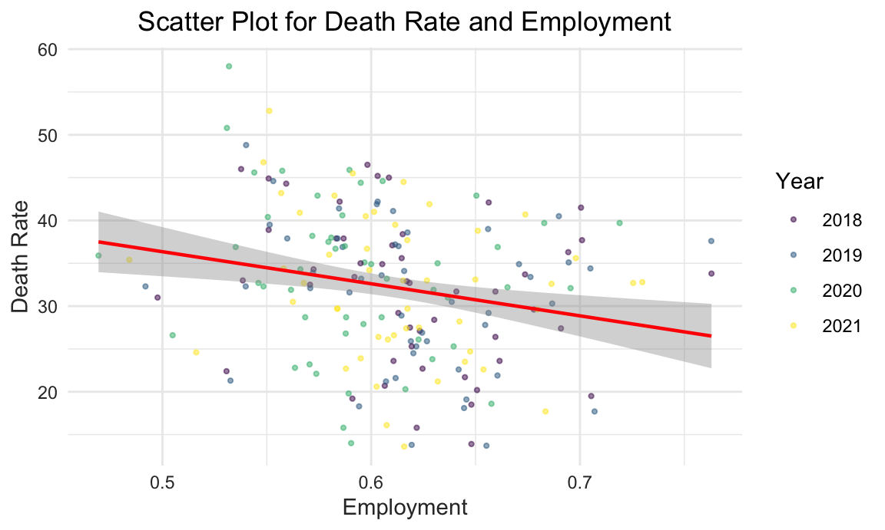
The boxplot shows the distribution of death rate in each region.
The variance of death rate is higher in South region.
We can roughly tell from the plot that the variances of death rate among regions are not equal. Thus, we may perform a statistical test to check heteroscedasticity
Test of equal variances
bartlett.test(death_rate ~ factor(region), data = data) |>
broom::tidy() |>
knitr::kable()| statistic | p.value | parameter | method |
|---|---|---|---|
| 31.09801 | 8e-07 | 3 | Bartlett test of homogeneity of variances |
Based on the less-than-significance level of the p-value (usually 0.05), we have enough evidence to reject the null hypothesis of variance homogeneity. Therefore, we can assume that the variance of mortality rates is not equal under different regions. This may have important implications for some statistical methods (e.g., analysis of variance ANOVA), which typically assume variance chi-square.
t.test : Compare Mean Death Rate Between West America and Midwest America
From the boxplot above, we find that the Alzheimer’s Disease death rate in West region and Midwest region are almost overlapping. Though the median of Midwest region is higher, the variance in West region seems smaller. Thus, we want to study if the mean death rate in the two regions are significantly different.
Extract death rate in West America and Midwest America
west_death_rate <- data |>
filter(region == "West") |>
pull(death_rate)
midwest_death_rate <- data |>
janitor::clean_names() |>
filter(region == "Midwest") |>
pull(death_rate)var.test(west_death_rate,midwest_death_rate,alternative = "two.sided",conf.level = 0.95) |>
broom::tidy() |>
knitr::kable()| estimate | num.df | den.df | statistic | p.value | conf.low | conf.high | method | alternative |
|---|---|---|---|---|---|---|---|---|
| 2.968585 | 51 | 47 | 2.968585 | 0.0002431 | 1.678201 | 5.216459 | F test to compare two variances | two.sided |
The null hypothesis for the variance test is that the two variance are equal. The result shows that the p-value is much less than 0.05. Thus, we may reject the null hypothesis and conclude that the variances are not equal. Next, we should perform 2 sample t.test with unknown and unequal variance.
Two sample t.test with unknown unequal variances
t.test(west_death_rate,midwest_death_rate,alternative = "less",conf.level = 0.95,paired = F,var.equal = FALSE ) |>
broom::tidy() |>
knitr::kable()| estimate | estimate1 | estimate2 | statistic | p.value | parameter | conf.low | conf.high | method | alternative |
|---|---|---|---|---|---|---|---|---|---|
| -0.0112179 | 32.15962 | 32.17083 | -0.0091864 | 0.4963462 | 83.01814 | -Inf | 2.020069 | Welch Two Sample t-test | less |
- The p-value is greater than the conventional significance level of 0.05, suggesting that there is not enough evidence to reject the null hypothesis. The results indicate that, based on the data, there is no significant difference in death rates between the “west” and “midwest” regions, or the death rate in the “west” region is not significantly less than the death rate in the “midwest” region.
2. Average Alzheimer’s Disease death rate by (region, year) Combination
data |>
group_by(region,year) |>
summarise(avg_by_year_region = mean(death_rate,na.rm = T)) |>
pivot_wider(
names_from = region,
values_from = avg_by_year_region
) |>
knitr::kable(digits = 3)| year | Midwest | Northeast | South | West |
|---|---|---|---|---|
| 2018 | 31.583 | 24.111 | 36.269 | 31.885 |
| 2019 | 31.883 | 23.344 | 34.869 | 30.662 |
| 2020 | 34.150 | 23.900 | 38.675 | 33.115 |
| 2021 | 31.067 | 23.911 | 36.525 | 32.977 |
data |>
group_by(region,year) |>
summarise(avg_by_year_region = mean(death_rate,na.rm = T)) %>%
ggplot(aes(x = year, y = avg_by_year_region, color = region)) +
geom_line() +
geom_point() +
labs(
y = "Average Alzheimer's Disease death rate",
title = "Average Alzheimer's Disease death rate by Region, Year") 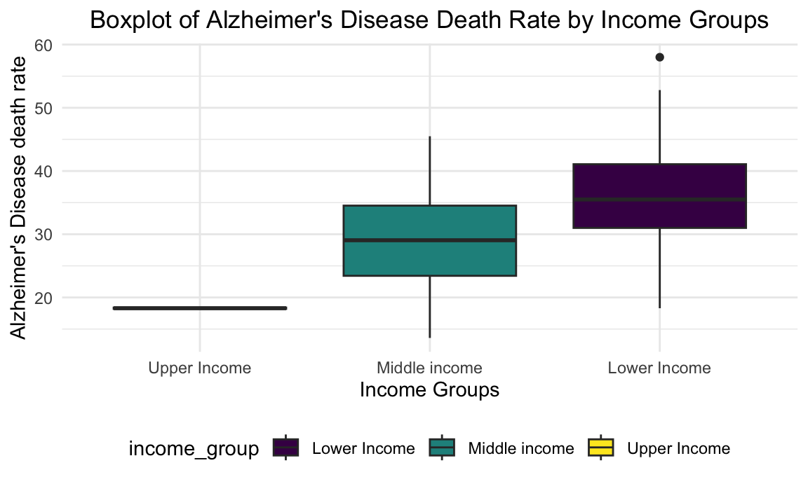
The table and line graph above show the descriptive statistics and overall trend.
It is clearly shown in the plot that Northeast region has a much lower and South resgion has a much higher average Alzheimer’s Disease death rate than the other regions.
3. Average Alzheimer’s Disease death rate by Income Level
data |>
group_by(year) |>
select(year,income) |>
summarise(median_income_by_year = median(income,na.rm = T)) |>
knitr::kable(digits = 3)| year | median_income_by_year |
|---|---|
| 2018 | 48986.21 |
| 2019 | 49792.03 |
| 2020 | 52442.06 |
| 2021 | 54057.93 |
The table above shows the median personal annual income of each year.
Then, we use the median personal annual income of each year to categorize different income groups (with”less than median income” as “Lower Income”, “more than 1.3 times of median income” as “Upper Income”, and those between these ranges as “Middle Income”.
We use this income group division to calculate average Alzheimer’s Disease death rate of each group.
income_level_2018 =
data |>
group_by(year) |>
filter(year == 2018) |>
mutate(
income_group = case_when(
income < 48986.21 ~"Lower Income",
income > 1.3* 48986.21 ~"Upper Income",
TRUE ~ "Middle income"
))
income_level_2019 =
data |>
group_by(year) |>
filter(year == 2019) |>
mutate(
income_group = case_when(
income <49792.03 ~"Lower Income",
income > 1.3* 49792.03 ~"Upper Income",
TRUE ~ "Middle income"
))
income_level_2020 =
data |>
group_by(year) |>
filter(year == 2020) |>
mutate(
income_group = case_when(
income <52442.06 ~"Lower Income",
income > 1.3* 52442.06 ~"Upper Income",
TRUE ~ "Middle income"
))
income_level_2021 =
data |>
group_by(year) |>
filter(year == 2021) |>
mutate(
income_group = case_when(
income <54057.93 ~"Lower Income",
income > 1.3* 54057.93 ~"Upper Income",
TRUE ~ "Middle income"
))
income_level =
bind_rows(income_level_2018,income_level_2019,income_level_2020,income_level_2021)
income_level |>
filter(!is.na(income_group)) |>
group_by(income_group) |>
summarise(avg_by_income = mean(death_rate,na.rm = T)) |>
arrange(avg_by_income) |>
knitr::kable(digits = 3)| income_group | avg_by_income |
|---|---|
| Upper Income | 18.300 |
| Middle income | 28.971 |
| Lower Income | 35.270 |
income_level |>
filter(!is.na(income_group)) |>
group_by(income_group) |>
filter(!is.na(death_rate)) |>
ggplot(aes(x = fct_reorder(income_group,death_rate), y = death_rate,fill = income_group)) +
geom_boxplot() +
labs(
title = "Boxplot of Alzheimer's Disease Death Rate by Income Groups",
x = "Income Groups",
y = "Alzheimer's Disease death rate")
The boxes of different income groups are almost not overlapping with each other.
The pattern is clear that people from lower income group tend to have a higher Alzheimer’s Disease Death Rate.
anova_result <- aov(death_rate ~ factor(income_group), data = income_level)
TukeyHSD(anova_result) |>
broom::tidy() |>
knitr::kable()| term | contrast | null.value | estimate | conf.low | conf.high | adj.p.value |
|---|---|---|---|---|---|---|
| factor(income_group) | Middle income-Lower Income | 0 | -6.298775 | -8.991971 | -3.605578 | 0.0000003 |
| factor(income_group) | Upper Income-Lower Income | 0 | -16.969608 | -30.492597 | -3.446618 | 0.0095320 |
| factor(income_group) | Upper Income-Middle income | 0 | -10.670833 | -24.201947 | 2.860281 | 0.1524562 |
The ANOVA results indicate a significant difference in mean life expectancy among different income groups (p < 0.05). The post hoc tests further reveal:
A significant difference in mean life expectancy between Middle Income and Lower Income groups.
A significant difference in mean life expectancy between Upper Income and Lower Income groups.
No significant difference in mean life expectancy between Upper Income and Middle Income groups.
In summary, there are statistically significant variations in life expectancy across income groups, with specific differences observed in pairwise comparisons between Middle Income vs. Lower Income and Upper Income vs. Lower Income.
4. Average Alzheimer’s Disease death rate by Employment
data |>
group_by(year) |>
select(year,employment) |>
summarise(med_employ_by_year = median(employment,na.rm = T)) |>
knitr::kable(digits = 3)| year | med_employ_by_year |
|---|---|
| 2018 | 0.617 |
| 2019 | 0.617 |
| 2020 | 0.588 |
| 2021 | 0.612 |
The table above shows the median personal annual income of each year.
Then, we use the median employment rate of each year to categorize different employment groups (with”less than or equal to median” as “Lower Employment Rate”, “more than median” as “High Employment Rate”.
We use this employment group division to calculate average Alzheimer’s Disease death rate of each group.
employ_2018 =
data |>
group_by(year) |>
filter(year == 2018) |>
mutate(
employ_group = case_when(
employment <= 0.617 ~"Low Employment Rate",
employment >0.617~"High Employment Rate",
))
employ_2019 =
data |>
group_by(year) |>
filter(year == 2019) |>
mutate(
employ_group = case_when(
employment <= 0.617 ~"Low Employment Rate",
employment > 0.617~"High Employment Rate",
))
employ_2020 =
data |>
group_by(year) |>
filter(year == 2020) |>
mutate(
employ_group = case_when(
employment <= 0.588 ~"Low Employment Rate",
employment > 0.588~"High Employment Rate",
))
employ_2021 =
data |>
group_by(year) |>
filter(year == 2021) |>
mutate(
employ_group = case_when(
employment <= 0.612 ~"Low Employment Rate",
employment >0.612~"High Employment Rate",
))
employ_level =
bind_rows(employ_2018,employ_2019,employ_2020,employ_2021)
employ_level |>
group_by(employ_group) |>
summarise(avg_by_employ = mean(death_rate,na.rm = T)) |>
knitr::kable(digits = 3)| employ_group | avg_by_employ |
|---|---|
| High Employment Rate | 29.345 |
| Low Employment Rate | 34.701 |
employ_level |>
group_by(employ_group) |>
ggplot(aes(x = employ_group, y = death_rate,fill = employ_group)) +
geom_boxplot() +
labs(
title = "Boxplot of Alzheimer's Disease Death Rate by Employment Rate",
x = "Employment Rate",
y = "Alzheimer's Disease Death Rate")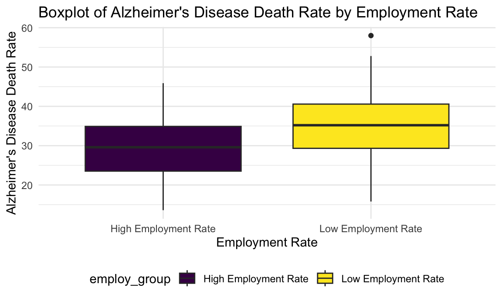
- The pattern is clear that low employment tend to a higher Alzheimer’s Disease death rate.
t.test(death_rate ~ factor(employ_group),data = employ_level, alternative = "less",conf.level = 0.95,paired = F,var.equal = TRUE ) |>
broom::tidy() |>
knitr::kable()| estimate | estimate1 | estimate2 | statistic | p.value | parameter | conf.low | conf.high | method | alternative |
|---|---|---|---|---|---|---|---|---|---|
| -5.356082 | 29.3449 | 34.70098 | -4.571787 | 4.3e-06 | 198 | -Inf | -3.419994 | Two Sample t-test | less |
- We have also performed 2 sample t.test to compare the mean death rate between the two groups. We conclude that the means are not equal. Since the method is similar to what we have used and displayed when studying the regional differences, we do not show the process here.
Summary
In this analysis, we explored the impact of various factors on Alzheimer’s Disease death rates using statistical tests and visualizations. Key findings include:
Regional differences in Alzheimer’s Disease death rates, with the South region having the highest and the Northeast region having the lowest average death rates.
Significant variations in Alzheimer’s Disease death rates based on income and employment groups, indicating that socioeconomic factors play a role in disease outcomes.
Model
Data Set Splitting
We used data from the years 2018 to 2020 to train our models, and data from 2021 to perform prediction.
All these datasets have been filtered to remove any missing values and do not contain any outliers, ensuring that the data quality is high. This preprocessing step lays a strong foundation for building accurate and reliable models.
data = readRDS("data_for_model.rds")
training_data = filter(data, year >= 2018 & year <= 2020) |>
select(-c(state,year))
testing_data = filter(data, year == 2021) |>
select(-c(state,year))Multiple Linear Regression
Model Selection
The reason for initially choosing linear models in statistical analysis is their simplicity and ease of understanding. These models, by representing relationships in a straightforward linear manner, make it easier for us to comprehend how different variables affect the death rate we care about.
Moreover, linear models are known for their robustness, offering reliable performance even with various types of data and statistical errors. Importantly, they serve as an effective benchmark in more complex modeling processes.
By starting with a linear model, we can establish a baseline performance level, against which the effectiveness of more sophisticated models can be measured. This stepwise approach helps in ensuring that the complexity of a model is justified by a significant improvement over the simpler linear model.
Full model: Linear regression
model = lm(death_rate ~ employment + hc_exp + income + edu_level + cardio_rate + smoke_rate + elder_rate, data = training_data)
summary(model) |>
broom::tidy() |>
knitr::kable()| term | estimate | std.error | statistic | p.value |
|---|---|---|---|---|
| (Intercept) | 68.3037142 | 13.4233735 | 5.0884164 | 0.0000012 |
| employment | 24.9223618 | 16.5331015 | 1.5074221 | 0.1340921 |
| hc_exp | -0.0012826 | 0.0007332 | -1.7492692 | 0.0825687 |
| income | -0.0002319 | 0.0001776 | -1.3061814 | 0.1937624 |
| edu_level | -45.7011712 | 21.4826355 | -2.1273540 | 0.0352503 |
| cardio_rate | 180.2845378 | 51.4160324 | 3.5063876 | 0.0006212 |
| smoke_rate | -11.4113239 | 31.4644509 | -0.3626735 | 0.7174288 |
| elder_rate | -152.9455140 | 35.4789569 | -4.3108797 | 0.0000316 |
broom::glance(model) |>
mutate(model = "Full Linear Regression") |>
select(model, r.squared, adj.r.squared, p.value, AIC, BIC) |>
knitr::kable()| model | r.squared | adj.r.squared | p.value | AIC | BIC |
|---|---|---|---|---|---|
| Full Linear Regression | 0.3990315 | 0.367162 | 0 | 956.2865 | 982.7613 |
Based on the table of full model, some of the predictors are statistically significant while others are not, so we need a further selection of the model.
Backwards Elimination
We use Backward Elimination for constructing our linear regression model to enhance its efficiency and interpretability. This method systematically removes the least significant variables, ensuring that only the most impactful predictors are retained. Consequently, it helps in reducing model complexity and avoiding overfitting, resulting in a more robust and meaningful model.
backward_result = step(model, direction = 'backward', trace = 0)
broom::tidy(backward_result) |>
knitr::kable()| term | estimate | std.error | statistic | p.value |
|---|---|---|---|---|
| (Intercept) | 74.2170216 | 7.6615066 | 9.687001 | 0.0000000 |
| hc_exp | -0.0014021 | 0.0005712 | -2.454649 | 0.0153748 |
| edu_level | -47.8686408 | 12.8765984 | -3.717491 | 0.0002939 |
| cardio_rate | 146.1913832 | 46.7572070 | 3.126606 | 0.0021660 |
| elder_rate | -155.1015760 | 33.8923959 | -4.576294 | 0.0000106 |
selected_model = lm(death_rate ~ hc_exp + edu_level + cardio_rate + elder_rate, data = training_data)
summary(selected_model) |>
broom::tidy() |>
knitr::kable()| term | estimate | std.error | statistic | p.value |
|---|---|---|---|---|
| (Intercept) | 74.2170216 | 7.6615066 | 9.687001 | 0.0000000 |
| hc_exp | -0.0014021 | 0.0005712 | -2.454649 | 0.0153748 |
| edu_level | -47.8686408 | 12.8765984 | -3.717491 | 0.0002939 |
| cardio_rate | 146.1913832 | 46.7572070 | 3.126606 | 0.0021660 |
| elder_rate | -155.1015760 | 33.8923959 | -4.576294 | 0.0000106 |
After applying Backward Elimination, we have obtained a linear regression model that is streamlined and comprises only the statistically significant predictors.
Model Performance
pre =
training_data |>
add_predictions(selected_model) |>
add_residuals(selected_model)
p1 <- ggplot(pre, aes(x = pred, y = resid)) +
geom_point() +
geom_hline(yintercept = 0, linetype = "dashed", color = "red") +
labs(
x = "Fitted Values",
y = "Residuals",
title = "Residuals vs Fitted Plot"
) +
theme_minimal() +
theme(
plot.title = element_text(hjust = 0.5),
axis.text = element_text(color = "grey20"),
axis.title = element_text(color = "grey20")
)
residuals = resid(selected_model)
p2 <- ggplot(as.data.frame(residuals), aes(sample = residuals)) +
stat_qq() +
stat_qq_line(color = "red") +
labs(
title = "Normal Q-Q Plot",
x = "Theoretical Quantiles",
y = "Sample Quantiles"
) +
theme_minimal() +
theme(
plot.title = element_text(hjust = 0.5)
)
library(patchwork)
p1 + p2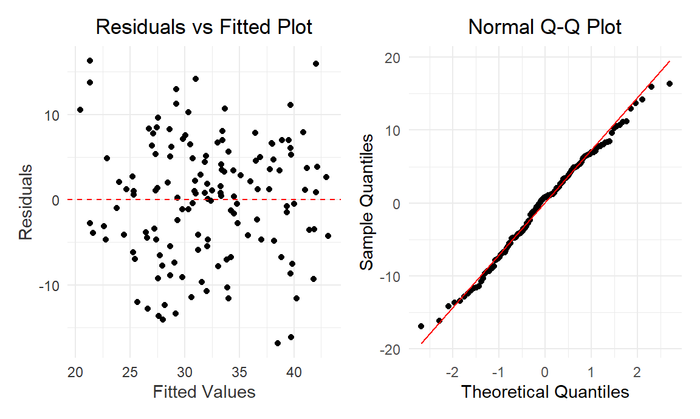
The residuals versus fitted plot shows a random distribution of residuals around the zero line without any discernible patterns, indicating good model fit and homoscedasticity. No obvious outliers are present, suggesting that the linear regression model assumptions are likely being met.
The QQ plot suggests although the slightly deviations at the tails indicate potential non-normality, the residuals from a statistical model are approximately normally distributed around the center.
broom::glance(selected_model) |>
mutate(model = "Selected Linear Regression") |>
select(model, r.squared, adj.r.squared, p.value, AIC, BIC) |>
knitr::kable()| model | r.squared | adj.r.squared | p.value | AIC | BIC |
|---|---|---|---|---|---|
| Selected Linear Regression | 0.3854173 | 0.3672074 | 0 | 953.4226 | 971.0725 |
Cross Validation for RMSE
To assess the performance and reliability of a predictive model, we use the Cross-validation method to divide the training data into 100 subsets to ensure that each data point is used for both training and testing. This helps assess how well the model generalizes to new, unseen data.
# generate a cv dataframe
cv_df =
crossv_mc(training_data, 100) %>%
mutate(
train = map(train, as_tibble),
test = map(test, as_tibble))
# fit the model to the generated CV dataframe
cv_df =
cv_df |>
mutate(
model = map(train, ~lm(death_rate ~employment+hc_exp+income+edu_level+cardio_rate+smoke_rate+elder_rate, data = .x)),
rmse = map2_dbl(model, test, ~rmse(model = .x, data = .y)))
# plot the prediction error
cv_df |>
select(rmse) |>
pivot_longer(
everything(),
names_to = "model",
values_to = "rmse") %>%
ggplot(aes(x = model, y = rmse)) +
geom_violin(fill = "blue", alpha = 0.5) +
labs(
title = "Prediction Errors For Our Model Under CV",
x = "Model Linear Regression",
y = "Prediction Errors"
) +
theme_minimal() +
theme(
plot.title = element_text(hjust = 0.5),
axis.text = element_text(color = "grey20"),
axis.title = element_text(color = "grey20")
)The violin plot indicates a relatively concentrated distribution of RMSE values for the linear regression model during cross-validation, primarily within the 7 to 8 range, suggesting consistent prediction errors without extreme variability. The symmetric shape around the center suggests a median error likely within this range, implying a stable model performance.
Bootstrap
Bootstrapping, involving repeated sampling with replacement, ensures that we are not just creating a model that works well for our current dataset (as indicated by a high R²) but also one that is likely to perform consistently across different, unseen datasets.
training_data |>
modelr::bootstrap(n = 1000) |>
mutate(
models = map(strap, \(df) lm(death_rate ~employment+hc_exp+income+edu_level+cardio_rate+smoke_rate+elder_rate, data = df)),
results = map(models, broom::glance)) |>
select(results) |>
unnest(results) |>
ggplot(aes(x = r.squared)) +
geom_histogram(aes(y = ..density..), bins = 30, fill = 'blue', alpha = 0.5) +
geom_density(alpha = .2, fill = "red") +
labs(title = "Bootstrap Distribution of R²", x = "R²", y = "Density") +
theme_minimal()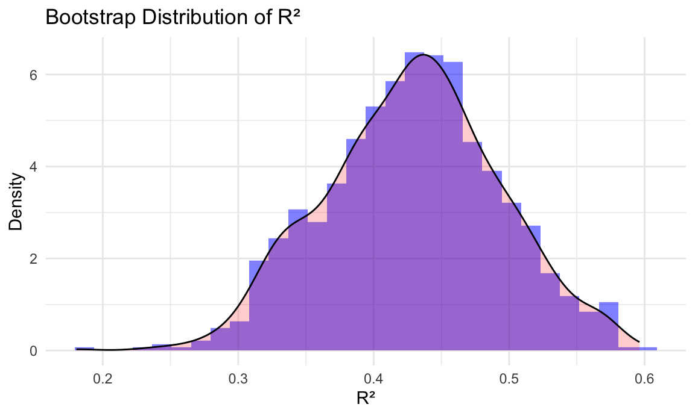
Despite all the varibles are significant, R² value is around 0.4, which is suggests potential nonlinear relationships or multicollinearity issues in our dataset.
Random Forest Model
Model Selection
The Random Forest Model is an ensemble learning method, play an important role in classification and regression tasks by building multiple decision trees and aggregating their outputs. It handles complex datasets well and is robust against overfitting. Thus, we consider switching to Random Forest when linear models has limitations. It effectively captures complex, non-linear relationships in data, offering improved accuracy and deeper insights.
library(randomForest)
rf_model <- randomForest(death_rate ~ employment+hc_exp+income+edu_level+cardio_rate+smoke_rate+elder_rate, data = training_data)Model Performance
We also use cross validation and boostrap to see the performance and reliability of the random forest model as we did to the linear model.
Cross Validation for RMSE
# generate a cv dataframe
cv_df =
crossv_mc(training_data, 100) %>%
mutate(
train = map(train, as_tibble),
test = map(test, as_tibble))
# fit the model to the generated CV dataframe
cv_df =
cv_df |>
mutate(
model = map(train, ~randomForest(death_rate ~employment+hc_exp+income+edu_level+cardio_rate+smoke_rate+elder_rate, data = .x)),
rmse = map2_dbl(model, test, ~rmse(model = .x, data = .y)))
# plot the prediction error
cv_df |>
select(rmse) |>
pivot_longer(
everything(),
names_to = "model",
values_to = "rmse") %>%
ggplot(aes(x = model, y = rmse)) +
geom_violin(fill = "blue", alpha = 0.5) +
labs(
title = "Prediction Errors For Our Model Under CV",
x = "Model Random Forest",
y = "Prediction Errors"
) +
theme_minimal() +
theme(
plot.title = element_text(hjust = 0.5),
axis.text = element_text(color = "grey20"),
axis.title = element_text(color = "grey20")
)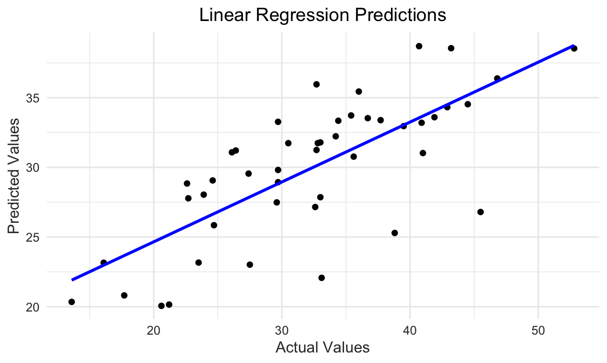
From the plot, the RMSE is predominantly below 7, ranging from approximately 5.5 to 9. This level of RMSE is lower compared to that of the linear models we’ve previously evaluated, indicating that this model performs better. Lower RMSE values signify more accurate predictions, thus suggesting that this model is a more effective predictor for our dataset.
# R²
rf_predictions <- predict(rf_model, training_data)
r_squared <- cor(training_data$death_rate, rf_predictions)^2
data.frame(
model = "Random Forest Model",
r.squard = r_squared
) |>
knitr::kable()| model | r.squard |
|---|---|
| Random Forest Model | 0.9325145 |
Calculated using the training data, the R² is 0.9325145, which indicates a very high level of explained variance in the model. This suggests that our model is highly effective in capturing and representing the relationships within the training dataset.
Bootstrap
We perform bootstrapping to evaluate the model’s stability and reliability.
library(randomForest)
library(boot)
bootstrap_r2 <- function(data, indices) {
boot_data <- data[indices, ]
model <- randomForest(death_rate ~employment+hc_exp+income+edu_level+cardio_rate+smoke_rate+elder_rate, data = boot_data)
predictions <- predict(model, boot_data)
r_squared <- cor(boot_data$death_rate, predictions)^2
return(r_squared)
}
results <- boot(data = training_data, statistic = bootstrap_r2, R = 1000)
# Create a data frame from the bootstrapped R² values
results_df <- data.frame(R_squared = results$t)
# Use ggplot2 to create a histogram with a density curve
ggplot(results_df, aes(x = R_squared)) +
geom_histogram(aes(y = ..density..), bins = 30, fill = 'blue', alpha = 0.5) +
geom_density(alpha = .2, fill = "red") +
labs(title = "Bootstrap Distribution of R²", x = "R²", y = "Density") +
theme_minimal() +
theme(
plot.title = element_text(hjust = 0.5),
axis.text = element_text(color = "grey20"),
axis.title = element_text(color = "grey20")
)
The bootstrap results of the Random Forest model showing an R² value around 0.96 indicate a high level of accuracy and consistency. This suggests that the model is not only effective in explaining a large portion of the variance in the data but also demonstrates robust performance across different samples.
Prediction
testing_data$predicted_death_rate <- predict(rf_model, testing_data)
ggplot(testing_data, aes(x = death_rate, y = predicted_death_rate)) +
geom_point(color = "black") + # Add the actual data points
geom_smooth(method = "lm",se = FALSE, color = "blue") +
labs(title = "Linear Regression Predictions",
x = "Actual Values",
y = "Predicted Values") +
theme_minimal() +
theme(
plot.title = element_text(hjust = 0.5),
axis.text = element_text(color = "grey20"),
axis.title = element_text(color = "grey20")
)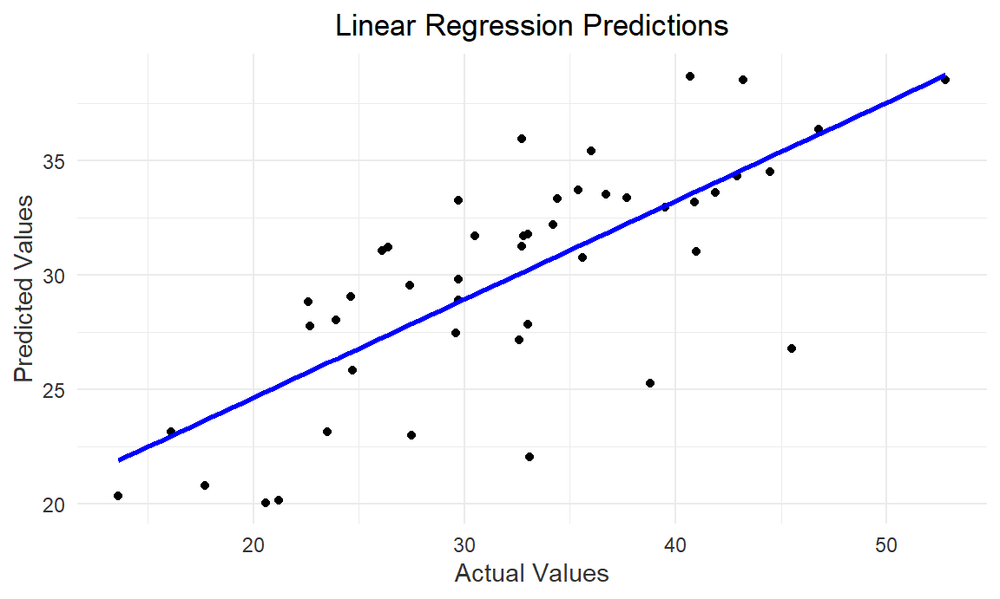
Using the 2021 data to predict with the Random Forest model, we observed that the data points largely align with the fitted line, especially within the middle range of actual values. There are some outliers, particularly at higher actual values, but this indicates that the model’s predictive accuracy is reasonable within the normal range.
Results and Discussion
importance_values <- importance(rf_model)
feature_importance <- data.frame(Feature = rownames(importance_values),
Importance = importance_values[,1]) %>%
arrange(Importance) %>%
mutate(Feature = factor(Feature, levels = Feature))
plot_ly(feature_importance, x = ~Importance, y = ~Feature, type = 'bar', orientation = 'h') %>%
layout(title = "Feature Importance from Random Forest Model",
xaxis = list(title = "Importance"),
yaxis = list(title = "Feature"))After careful consideration, we chose the random forest to be our
final mofel. And according to the model, edu_level emerges
as the most important feature, which suggests a strong correlation
between educational attainment and mortality rates in Alzheimer’s
patients. Following it,hc_exp stands as the second most
crucial factor, indicating the importance of healthcare resources in
managing Alzheimer’s disease. Other features like
smoke_rate, elder_rate,
employment, income, and
cardio_rate are ranked in descending order of importance,
indicating a gradual decrease in their significance within the model.
These findings highlight the multifaceted nature of factors affecting
Alzheimer’s patient outcomes and underscore the importance of
socioeconomic and lifestyle factors in addition to healthcare
provision.
Clinical Trials
# Function to tidy Donanemab results
combine_mean_sd = function(df, group = ""){
n = df |> filter(str_detect(group, "Low/medium tau")) |> pull(sample_size) # number in group 1
m = df |> filter(str_detect(group, "combined")) |> pull(sample_size) # number in group 2
sx = df |> filter(str_detect(group, "Low/medium tau")) |> pull(sd) # sd of group 1
sy = df |> filter(str_detect(group, "combined")) |> pull(sd) # sd of group 2
x_bar = df |> filter(str_detect(group, "Low/medium tau")) |> pull(mean) # mean of group 1
y_bar = df |> filter(str_detect(group, "combined")) |> pull(mean) # mean of group 2
combined_mean = (n * x_bar + m * y_bar) / (n + m)
combined_sd = sqrt(((n-1)*sx^2+(m-1)*sy^2)/(n+m-1)+(n*m*(x_bar-y_bar)^2)/((n+m)*(n+m-1)))
combined_samplesize = n + m
combined_ci_lower = combined_mean - 1.96*combined_sd
combined_ci_upper = combined_mean + 1.96*combined_sd
return (tibble(
outcome = df |> head(1) |> pull(outcome),
group = group,
mean = combined_mean,
sd = combined_sd,
sample_size = combined_samplesize,
ci_lower = combined_ci_lower,
ci_upper = combined_ci_upper,
time = 0))}Clinical Trials Pipeline
In our quest to deepen the understanding of Alzheimer’s disease and its treatment landscape, we have developed an innovative Shiny application designed to visualize the clinical trials of Alzheimer’s drugs across the United States. This interactive tool is a significant stride in making complex trial data accessible, which labels all trials on the map and has regional statistics based on zoom size. The following screenshot offers a glimpse into the app’s capabilities, and the full dashboard can be accessed [here].
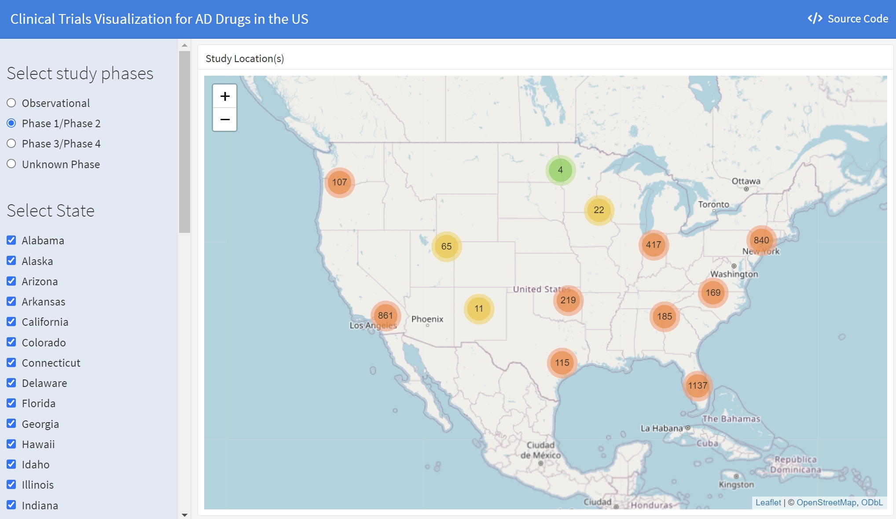
Trials comparison
We further evaluate and compare the performance of the two latest promising drugs Lecanemab and Donanemab for their participants’ characteristics, treatment efficacy, and adverse events.
Participants’ Demographics
sex_df=
readxl::read_excel("data/newdrugdemographic.xlsx",sheet="Sex", range = "A1:C5") |>
janitor::clean_names()
race_df=
readxl::read_excel("data/newdrugdemographic.xlsx",sheet="Race", range = "A1:C9") |>
janitor::clean_names()
sex_colors <- c("Male" = "#a1afc9", "Female" = "#edd1d8")
race_colors <- c("Black" = "#c2ccd0", "Asian" ="#fcefe8", "White" = "#e0eee8", "Other or Missing" = "#eedeb0")
p1 <- sex_df |>
plot_ly(x = ~drug, y = ~sex_prop, type = "bar", color = ~sex, colors = sex_colors, legendgroup = "sex") |>
layout(barmode = "stack",
showlegend = TRUE) |>
add_annotations(
text = "Sex",
x = 0.5,
y = 1.05,
xref = "paper",
yref = "paper",
showarrow = FALSE,
font = list(size = 10)
)
p2 <- race_df |>
mutate(race = fct_reorder(race, -race_prop)) |>
plot_ly(x = ~drug, y = ~race_prop, type = "bar", color = ~race, colors = race_colors, legendgroup = "race") |>
layout(barmode = "stack",
showlegend = TRUE) |>
add_annotations(
text = "Race",
x = 0.5,
y = 1.05,
xref = "paper",
yref = "paper",
showarrow = FALSE,
font = list(size = 10)
)
subplot(p1, p2, nrows = 1, margin = 0.05) |>
layout(title = "Distribution of Baseline Participants' Sex and Race by Drug",
yaxis = list(title = "Percentage (%)"))From the plot, we can see that there are more female participants in Donanemab’s clinical trial that in Lecanemab’s clinical trial.
From the plot, we can also see there is more diversity in Lecanemab’s clinical trial. Races other than white occupy a larger proportion of participants in Lecanemab’s clinical trial than in Donanemab’s clinical trial than that in Lecanemab’s clinical trial, especially Asians.
All trials participants took Alzheimer’s tests to evaluate their stages at the start of study. CDR-SB (Clinical Dementia Rating Scale Sum of Boxes), ADAS-Cog (Alzheimer’s Disease Assessment Scale - Cognitive Subscale) and MMSE (Mini-mental state examination) were shown in the plot, details of theses test scores were explained in next part.
iADRS <- read_excel("data/Donanemab_.xlsx", sheet = "1")
CDR_SB <- read_excel("data/Donanemab_.xlsx", sheet = "2")
ADCS_iADL <- read_excel("data/Donanemab_.xlsx", sheet = "3")
ADAS_Cog13 <- read_excel("data/Donanemab_.xlsx", sheet = "4")
MMSE <- read_excel("data/Donanemab_.xlsx", sheet = "5")
lec_result <- read_excel("data/Lecanemab.xlsx", sheet = "result") |>
filter(time == 0,
outcome %in% c("CDR-SB", "ADAS-Cog14", "MMSE")) |>
mutate(drug = "Lecanemab",
ci_lower = mean - 1.96*sd,
ci_upper = mean + 1.96*sd) |>
select(drug, everything())
don_result = bind_rows(
combine_mean_sd(CDR_SB |> filter(time == 0, str_detect(group, "Donanemab")), "Donanemab"),
combine_mean_sd(CDR_SB |> filter(time == 0, str_detect(group, "Placebo")), "Placebo"),
combine_mean_sd(ADAS_Cog13 |> filter(time == 0, str_detect(group, "Donanemab")), "Donanemab"),
combine_mean_sd(ADAS_Cog13 |> filter(time == 0, str_detect(group, "Placebo")), "Placebo"),
combine_mean_sd(MMSE |> filter(time == 0, str_detect(group, "Donanemab")), "Donanemab"),
combine_mean_sd(MMSE |> filter(time == 0, str_detect(group, "Placebo")), "Placebo")
) |>
mutate(drug = "Donanemab") |>
select(drug, everything())
ggplot(bind_rows(lec_result, don_result) |> filter (!(outcome %in% c("CDR-SB", "MMSE") & group == "Placebo")), aes(x = as.factor(time), y = mean, fill = group, color = group)) +
geom_point(position = position_dodge(0.9), size = 3, alpha = 0.7) +
geom_errorbar(aes(ymin = ci_lower, ymax = ci_upper), position = position_dodge(0.9), width = 0.25) +
facet_wrap(~outcome, scales = "free_y") +
labs(title = "Mean with 95% CI at Baseline",
x = "Time",
y = "Mean") +
theme_minimal()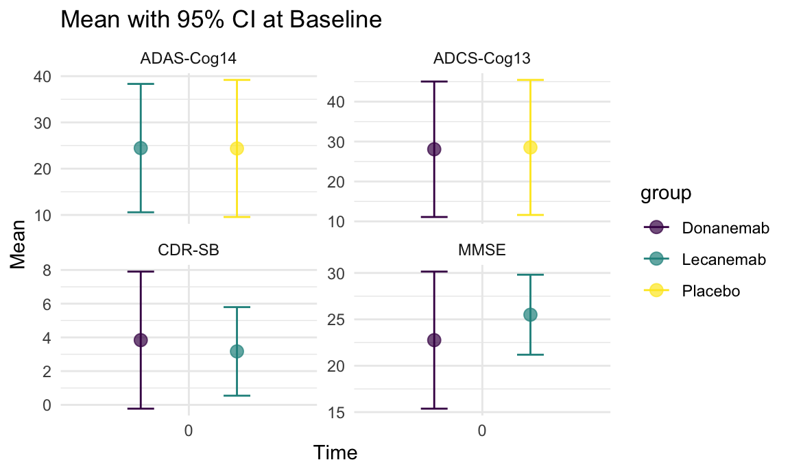
Treatment evaluation
The evaluated outcomes encompassed measures such as CDR-SB (Clinical Dementia Rating Scale Sum of Boxes), ADAS-Cog (Alzheimer’s Disease Assessment Scale - Cognitive Subscale), and various other clinical assessments. These metrics collectively offer valuable insights into the effectiveness of donanemab in comparison to the placebo, shedding light on its impact on slowing the progression of Alzheimer’s disease over the 76-week (18 months) trial period.
In the trial of Donanemab, participants were categorized into two groups based on tau biomarker levels in their cerebrospinal fluid (CSF): those with low/medium tau (mild cognitive impairment or early Alzheimer’s with lower tau levels) and those with high tau (early Alzheimer’s with higher tau levels). Additionally, a combined population included all trial participants, irrespective of tau levels. This stratification aimed to evaluate the efficacy of donanemab across different Alzheimer’s patient subgroups.
CDR-SB
The Clinical Dementia Rating Scale Sum of Boxes (CDR-SB) is a widely used assessment tool for evaluating the severity of dementia. It is a composite score derived from the Clinical Dementia Rating (CDR) scale, which is used to assess the cognitive and functional abilities of individuals with dementia.
The CDR-SB incorporates ratings across six domains: memory, orientation, judgment and problem solving, community affairs, home and hobbies, and personal care. Each domain is rated on a scale from 0 (no impairment) to 3 (severe impairment), and the total CDR-SB score ranges from 0 to 18, with higher scores indicating greater clinical impairment.
Don_CDR_SB = read_excel("data/Donanemab.xlsx", sheet = "result") |>
filter(outcome == "CDR-SB",
str_detect(group, "combined"))
Lec_CDR_SB = read_excel("data/Lecanemab.xlsx", sheet = "result") |>
filter(outcome == "CDR-SB")
CDR_SB_merge = bind_rows(Don_CDR_SB, Lec_CDR_SB) |>
mutate(group = case_match(
group,
"Donanemab-combined" ~ "Donanemab-combined",
"Placebo-combined" ~ "Donanemab Placebo-combined",
"Lecanemab" ~ "Lecanemab",
"Placebo" ~ "Lecanemab Placebo"))
ggplot(CDR_SB_merge, aes(x = as.factor(time), y = mean, fill = group, color = group)) +
geom_point(position = position_dodge(0.9), size = 3, alpha = 0.7) +
geom_errorbar(aes(ymin = ci_lower, ymax = ci_upper), position = position_dodge(0.9), width = 0.25) +
labs(title = "Mean with 95% CI over Time (CDR-SB)",
x = "Time",
y = "Mean") +
theme_minimal() +
theme(plot.title = element_text(hjust = 0.5))
- The trial results demonstrated that both treatments slows the clinical progression of Alzheimer compared to their placebo as measured by the CDR-SB, indicating its potential efficacy in addressing the symptoms and functional decline associated with early symptomatic Alzheimer’s disease. Lecanemab shows adjusted mean change of 1.21 from baseline to endpoint, while Donanemab shows 1.16 (95%CI: 0.97-1.35) least square mean change.
ADAS-Cog
The ADAS-Cog, a primary cognitive outcome measure mandated by the FDA for Alzheimer’s drug trials in the U.S., assesses language, memory, praxis, and orientation. This test, taking 30-35 minutes, scores from 0-70, with higher scores indicating greater cognitive impairment.
Don_ADAS_Cog = read_excel("data/Donanemab.xlsx", sheet = "result") |>
filter(outcome == "ADAS-Cog13")
Lec_ADAS_Cog = read_excel("data/Lecanemab.xlsx", sheet = "result") |>
filter(outcome == "ADAS-Cog14")
ADAS_Cog_merge = bind_rows(Don_ADAS_Cog, Lec_ADAS_Cog) |>
mutate(group = case_match(
group,
"Donanemab-combined" ~ "Donanemab (combined)",
"Placebo-combined" ~ "Donanemab Placebo (combined)",
"Lecanemab" ~ "Lecanemab",
"Placebo" ~ "Lecanemab Placebo",
"Donanemab-Low/medium tau" ~ "Donanemab (Low/medium tau)",
"Placebo-Low/medium tau" ~ "Donanemab Placebo (Low/medium tau)"))
ggplot(ADAS_Cog_merge, aes(x = as.factor(time), y = mean, fill = group, color = group)) +
geom_point(position = position_dodge(0.9), size = 3, alpha = 0.7) +
geom_errorbar(aes(ymin = ci_lower, ymax = ci_upper), position = position_dodge(0.9), width = 0.25) +
labs(title = "Mean with 95% CI over Time (ADAS-Cog)",
x = "Time",
y = "Mean") +
theme_minimal() +
theme(plot.title = element_text(hjust = 0.5))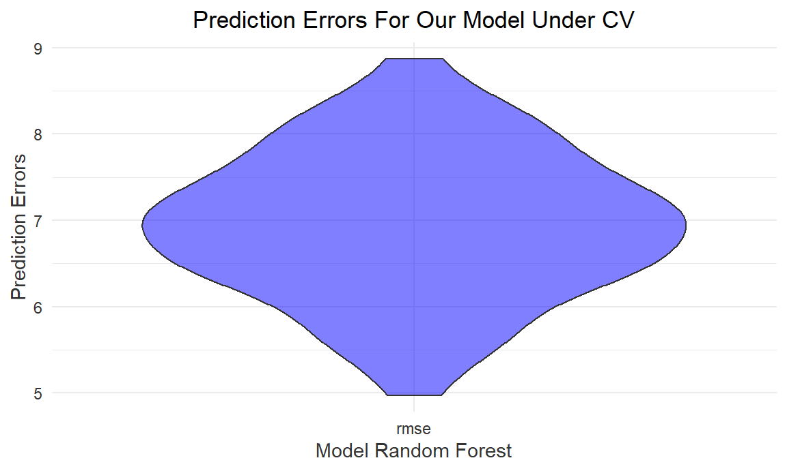
- A more pronounced reduction in the mean change from baseline to endpoint in the treatment group, as compared to the placebo, was observed for both Lecanemab (4.14 adjusted mean change) and Donanemab (3.17 LSM for low/medium tau, 5.46 LSM for combined). This suggests a potential positive impact of these drugs on cognitive function in Alzheimer’s patients, with varying efficacy across different stages of the disease.
Survival Analysis
The Phase III trials of Lecanemab and Donanemab both use cumulative hazard ratio to indicate the risk of progression assessed using CDR-SB score. The hazard plot for Donanemab is as following
Don_KM =
read_excel("./Data/Donanemab.xlsx", sheet = "K-M", range = "A1:D16") |>
janitor::clean_names()
plot_ly(Don_KM |>
filter(test == "CDR-SB") |>
pivot_longer(
donanemab:placebo,
names_to = "drug",
values_to = "ratio"
), x = ~time, y = ~ratio, color = ~drug, line = list(shape = "hv"), colors = "viridis") |>
layout(title = "Hazard Plot for Donanemab",
xaxis = list(title = "Days from First Infusion"),
yaxis = list(title = "Percentage of Participants Progression"))- The hazard ratio for the combined group of Donanemab was found to be 0.623 with a 95% confidence interval of 0.519 to 0.748, indicating a significant reduction in the risk associated with the progression of Alzheimer’s disease as measured by the CDR-SB score. In comparison, Lecanemab demonstrated a hazard ratio of 0.69, also suggesting a reduced risk, albeit to a slightly lesser extent than Donanemab. These results indicate that both drugs are effective in slowing the progression of Alzheimer’s disease, with Donanemab showing a marginally higher efficacy in this regard.
Adverse Events
General Overview
As we progress in our comprehensive exploration of Alzheimer’s disease and its treatment options, we now turn our focus to a critical aspect of drug evaluation: the analysis of adverse events associated with the two promising drugs.
lec_safety = read_excel("./Data/Lecanemab.xlsx", sheet = "safety", range = "A1:C5") |>
janitor::clean_names()
don_safety = read_excel("./Data/Donanemab.xlsx", sheet = "safety", range = "A1:C5") |>
janitor::clean_names()
merge_safety = left_join(lec_safety, don_safety, by = "events")plot_ly(merge_safety |>
mutate(events = fct_reorder(events, -lecanemab)) |>
pivot_longer(
lecanemab:donanemab_placebo,
names_to = "drug",
values_to = "cases"
),
x = ~events, y = ~cases, color = ~drug, type = 'bar', colors = "viridis") |>
layout(title = "Barplot for Adverse Events",
xaxis = list(title = "Adverse Event"),
yaxis = list(title = "Number of participants"))The Lecanemab group experienced a 0.7% death rate (6 cases) compared to 0.8% (7 cases) in the placebo group, with no deaths linked to Lecanemab or ARIA. Serious adverse events were slightly higher in the Lecanemab group at 14.0% (126 cases) versus 11.3% (101 cases) in the placebo.
For Donanemab, the death rate was 1.9% (16 cases) in the treatment group against 1.1% (10 cases) in the placebo, with serious adverse events at 17.4% (148 cases) for Donanemab and 15.8% (138 cases) for the placebo. These results suggest a similar safety profile for both drugs compared to their respective placebo groups.
safety_test = function(a, b, c, d, n1, n2){
RD = round(a/n1 - b/n2, 4)
RR = round((a/n1)/(b/n2), 4)
OR = round((a*d)/(b*c), 4)
Chis = round(prop.test(x = c(a, b), n = c(c, d), alternative = "two.sided", correct = FALSE)$statistic, 4)
p_value = round(prop.test(x = c(a, b), n = c(n1, n2), alternative = "two.sided", correct = FALSE)$p.value, 6)
return (tibble(Risk_Diff = RD, Risk_Ratio = RR, Odds_Ratio = OR, Xsquared = Chis, P.value = p_value))
}lec_safety_test = safety_test(126, 101, 772, 796, 898, 897)
don_safety_test = safety_test(148, 138, 705, 736, 853, 874)
comp_safety_test = safety_test(126, 148, 772, 705, 898, 853)
safety_merge = bind_rows(lec_safety_test, don_safety_test, comp_safety_test) |>
mutate(Test = c("Lec vs Placebo", "Don vs Placebo", "Lec vs Don")) |>
select(Test, everything())
kable(safety_merge)| Test | Risk_Diff | Risk_Ratio | Odds_Ratio | Xsquared | P.value |
|---|---|---|---|---|---|
| Lec vs Placebo | 0.0277 | 1.2461 | 1.2863 | 4.1774 | 0.077332 |
| Don vs Placebo | 0.0156 | 1.0989 | 1.1196 | 1.1387 | 0.382920 |
| Lec vs Don | -0.0332 | 0.8087 | 0.7775 | 5.3225 | 0.056015 |
In our statistical analysis of serious adverse events associated with Lecanemab, Donanemab, and their placebos, we have identified key findings. With a significance level set at 0.1, our results indicate a significant difference in serious adverse events between Lecanemab and its placebo, suggesting a higher risk associated with Lecanemab. In contrast, Donanemab did not show a significant difference in serious adverse events compared to its placebo, implying a potentially safer profile. Additionally, a significant difference was observed between Lecanemab and Donanemab, highlighting distinct safety profiles for these drugs.
Then, we further investigate the differences of specific adverse events for two drugs.
lec_ae = read_excel("./Data/Lecanemab.xlsx", sheet = "AE", range = "A1:C10") |>
janitor::clean_names()
don_ae = read_excel("./Data/Donanemab.xlsx", sheet = "AE", range = "A1:C10") |>
janitor::clean_names()
merge_ae = left_join(lec_ae, don_ae, by = "ae")plot_ly(merge_ae |>
mutate(ae = fct_reorder(ae, donanemab)) |>
pivot_longer(
lecanemab:donanemab_placebo,
names_to = "drug",
values_to = "cases"
),
x = ~ae, y = ~cases, color = ~drug, type = 'bar', colors = "viridis") |>
layout(title = "Barplot for Adverse Events",
xaxis = list(title = "Adverse Event"),
yaxis = list(title = "Number of participants"))The barplot clearly shows notable differences in specific adverse events (such as Infusion-related reactions, ARIA-E/ARIA-H, Urinary tract infections, and Headaches) between the treatment and placebo groups. To further evaluate and quantify these observed differences, we will proceed with a detailed statistical tests to provide a more definitive understanding of the significance of these adverse events.
Lecanemab vs Placebo
# test = lec_ae |>
# mutate(p = lecanemab_placebo/sum(lecanemab_placebo))
# chisq.test(test$lecanemab, p = test$p, correct = FALSE) \
lec_ae_result = lec_ae |>
mutate(testresult = map2(lecanemab, lecanemab_placebo, \(a, b) safety_test(a, b, 898-a, 897-b, 898, 897))) |>
rename(Adverse_Effect = ae) |>
unnest(testresult) |>
select(-lecanemab, -lecanemab_placebo)
kable(lec_ae_result)| Adverse_Effect | Risk_Diff | Risk_Ratio | Odds_Ratio | Xsquared | P.value |
|---|---|---|---|---|---|
| Infusion-related reaction | 0.1903 | 3.5869 | 4.5144 | 177.2332 | 0.000000 |
| ARIA-E | 0.1091 | 7.5249 | 8.4642 | 94.4143 | 0.000000 |
| ARIA-H | 0.0823 | 1.9114 | 2.1016 | 36.1979 | 0.000000 |
| Headache | 0.0300 | 1.3683 | 1.4145 | 5.7372 | 0.031416 |
| Fall | 0.0077 | 1.0802 | 1.0895 | 0.3691 | 0.586741 |
| Urinary tract infection | -0.0046 | 0.9502 | 0.9454 | 0.1396 | 0.734818 |
| Arrthralgia | -0.0101 | 0.8539 | 0.8447 | 0.8755 | 0.382293 |
| Dizziness | 0.0033 | 1.0640 | 1.0677 | 0.1080 | 0.756031 |
| Diarrhea | -0.0112 | 0.8267 | 0.8169 | 1.1504 | 0.313832 |
- The statistical tests reveals significant differences in the incidence of infusion-related reactions, ARIA-E/ARIA-H, and headaches between the Lecanemab and placebo groups. These findings are consistent with the most common side effects listed on the Lecanemab website, validating our results. This highlights the need for careful monitoring of these specific adverse events when considering Lecanemab for Alzheimer’s treatment, ensuring informed decision-making and optimized patient care.
Donanemab vs Placebo
# test = don_ae |>
# mutate(p = donanemab_placebo/sum(donanemab_placebo))
# chisq.test(test$donanemab, p = test$p, correct = FALSE)
don_ae_result = don_ae |>
mutate(testresult = map2(donanemab, donanemab_placebo, \(a, b) safety_test(a, b, 853-a, 874-b, 853, 874))) |>
rename(Adverse_Effect = ae) |>
unnest(testresult) |>
select(-donanemab, -donanemab_placebo)
kable(don_ae_result)| Adverse_Effect | Risk_Diff | Risk_Ratio | Odds_Ratio | Xsquared | P.value |
|---|---|---|---|---|---|
| Infusion-related reaction | 0.0822 | 18.9555 | 20.6611 | 74.5253 | 0.000000 |
| ARIA-E | 0.2209 | 12.3557 | 15.9482 | 258.0030 | 0.000000 |
| ARIA-H | 0.1226 | 2.6482 | 3.0525 | 76.6319 | 0.000000 |
| Headache | 0.0411 | 1.4178 | 1.4855 | 9.1550 | 0.008271 |
| Fall | 0.0078 | 1.0619 | 1.0714 | 0.3132 | 0.630088 |
| Urinary tract infection | -0.0148 | 0.7815 | 0.7693 | 1.8867 | 0.197644 |
| Arrthralgia | 0.0094 | 1.1954 | 1.2073 | 0.8524 | 0.382567 |
| Dizziness | 0.0072 | 1.1314 | 1.1401 | 0.4621 | 0.523000 |
| Diarrhea | -0.0068 | 0.8812 | 0.8749 | 0.4388 | 0.531494 |
- The test for comparing Donanemab and its placebo group has similarly identified significant differences in the occurrence of infusion-related reactions, ARIA-E/ARIA-H, and headaches. This parallel finding with Donanemab, mirroring the results observed with Lecanemab, underscores the importance of these specific adverse events in the context of Alzheimer’s disease treatments.
Lecanemab vs Donanemab
# test = don_ae |>
# mutate(p = donanemab_placebo/sum(donanemab_placebo))
# chisq.test(lec_ae$lecanemab, p = test$p, correct = FALSE)
com_ae = don_ae |>
mutate(lecanemab = lec_ae$lecanemab) |>
select(-donanemab_placebo)
com_ae_test = com_ae |>
mutate(testresult = map2(lecanemab, donanemab, \(a, b) safety_test(a, b, 898-a, 853-b, 898, 853))) |>
rename(Adverse_Effect = ae) |>
unnest(testresult) |>
select(-donanemab, -lecanemab) |>
filter(P.value < 0.05)
kable(com_ae_test)| Adverse_Effect | Risk_Diff | Risk_Ratio | Odds_Ratio | Xsquared | P.value |
|---|---|---|---|---|---|
| Infusion-related reaction | 0.1772 | 3.0422 | 3.7744 | 146.6853 | 0.000000 |
| ARIA-E | -0.1145 | 0.5236 | 0.4550 | 61.1095 | 0.000000 |
| Urinary tract infection | 0.0341 | 1.6465 | 1.7080 | 9.0587 | 0.005251 |
- In our comparative analysis of Lecanemab and Donanemab, we found notable differences in specific adverse events. Lecanemab showed a higher proportion of infusion-related reactions and urinary tract infections, while Donanemab exhibited a higher incidence of ARIA-E. These results highlight the distinct safety profiles of each drug, emphasizing the need for tailored monitoring strategies based on the unique risks associated with each treatment in managing Alzheimer’s disease.